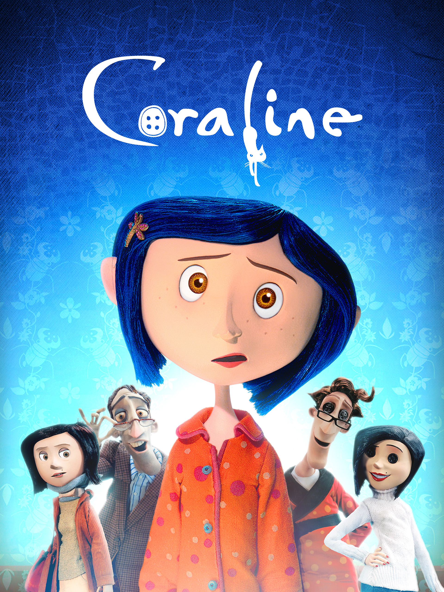

Coraline
Uma garota encontra uma realidade alternativa aparentemente perfeita, mas que esconde segredos assustadores.
Gênero: Fantasia sombria
Filmes, histórias e momentos
Nem sempre é fácil escolher o que assistir, por isso o CineList reúne alguns filmes para diferentes gostos e momentos. Aqui você pode conhecer algumas recomendações, descobrir curiosidades sobre o cinema e até calcular quanto custaria uma sessão de filmes com seus amigos.

Uma garota encontra uma realidade alternativa aparentemente perfeita, mas que esconde segredos assustadores.
Gênero: Fantasia sombria
Uma história de romance, confusões e duas pessoas que acabam se aproximando de uma forma inesperada.
Gênero: Comédia romântica
Uma jornalista e um publicitário entram em um jogo de apostas amorosas, mas seus planos começam a sair do controle.
Gênero: Comédia romântica
Vai assistir a um filme com amigos? Calcule o valor dos ingressos e dos lanches para descobrir o custo total da sessão.